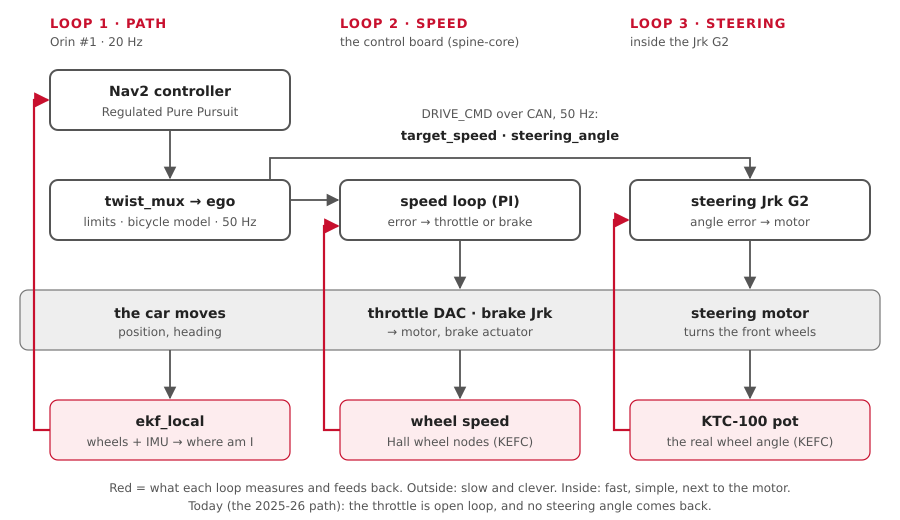

"Control" is how a wish ("go 1.5 m/s, turn gently left") becomes motors doing the right thing, even on a hill or with a flat-ish tyre. This page explains feedback loops, then shows each loop on our car and the limits and timeouts around them.
You'll learn:
- open loop vs closed loop;
- PID, by feel, with our speed loop's real numbers;
- where each loop closes on our car;
- the Ackermann and bicycle models, and what ego does with them;
- rate limits, timeouts and safe states.
1. Open loop vs closed loop
| Open loop | Closed loop | |
|---|---|---|
| Idea | send a command and hope | measure, compare with the target, correct |
| Like | a toaster: 2 minutes, whatever the bread | a thermostat: heat until it's 21 °C |
| Needs a sensor? | no | yes |
| On a hill | slows down, and nobody notices | sees the speed drop, adds throttle |
| Our car today (2025-26 path) | throttle = speed ÷ 3.0 m/s (legacy.yaml); no steering angle comes back |
- |
| Our car after KEFC | - | speed from the wheel nodes; steering angle from the KTC-100 pot |
2. PID, by feel
The error is target minus measured. A PID controller adds three pushes:
| Term | Pushes in proportion to | Like | Fixes |
|---|---|---|---|
| P (proportional) | the error now | pressing harder the slower you are | most of the error |
| I (integral) | the error added up over time | "I've been slow for a while, press more" | the last bit: hills, wind, friction |
| D (derivative) | how fast the error changes | easing off as you get close | overshoot. We don't use it |
Too much P: it wobbles. Too much I: it overshoots and swings. Anti-windup: cap the I term, so it can't grow huge while the car is stuck.
Our speed loop (PI), in numbers
firmware/spine/crates/spine-core/src/speed_loop.rs. Starting values, to tune on the car:
| Setting | Value | Means |
|---|---|---|
kp |
0.3 | 30 % throttle per 1 m/s too slow |
ki |
0.1 | +10 % throttle per second of being 1 m/s too slow |
integral_limit |
0.3 | the I term never gives more than 30 % (anti-windup) |
coast_band |
0.2 m/s | up to this much too fast: just less throttle, no brake |
brake_gain |
0.5 | 50 % brake per 1 m/s too fast, beyond the coast band |
hold_brake |
0.3 | 30 % brake when stopped, so the car can't roll |
Example: target 1.5 m/s, measured 1.0 m/s.
| Sum | Throttle | |
|---|---|---|
| P | 0.3 × 0.5 | 15 % |
| I, after 1 s of that | 0.1 × 0.5 × 1 s | + 5 % |
| Total | 20 %, and rising until the speed is right |
Example: target 1.0 m/s, measured 1.5 m/s (downhill). 0.5 m/s too fast, minus the 0.2 coast band = 0.3. Brake = 0.5 × 0.3 = 15 %. Throttle and brake are never on together.
3. Where each loop closes on our car

| Loop | Measures | Moves | Runs on | Rate |
|---|---|---|---|---|
| Path | where the car is (ekf_local) vs the plan |
speed and turn rate | Orin #1: Nav2's Regulated Pure Pursuit | 20 Hz |
| Speed | wheel speed (KEFC: Hall wheel nodes) | throttle DAC, brake Jrk | the control board: spine-core |
every board tick (10 ms in the Pico 2 program) |
| Steering angle | the KTC-100 pot | the steering motor | inside the steering Jrk G2 | the Jrk's own loop |
| Brake position | the actuator's own feedback, if it has one | the brake motor | inside the brake Jrk G2 | to confirm (KEFC list) |
| Plan | the costmap and the goal | a new path | Orin: Nav2's planner | 1 Hz |
The rule: the inner loops are fast and simple, and sit next to the motor. If the Orin hiccups for 50 ms, the board keeps the speed steady.
4. Ackermann and the bicycle model
Ackermann steering
When a car turns, the inner front wheel must turn more than the outer one: both wheels circle the same centre, on the line of the rear axle.
inner wheel (sharper)
┌──┐ ╱
rear │ │ ╱ outer wheel (gentler)
axle ──┼──┼──────────────────────● turning centre, R metres away
└──┘At a 5 m turn, with our wheelbase 1.57 m and track 0.77 m:
| Wheel | Angle |
|---|---|
| Inner (left, turning left) | 0.328 rad (18.8°) |
| Outer (right) | 0.284 rad (16.3°) |
| The bicycle model's one wheel | 0.304 rad (17.4°): in between |
The bicycle model
Merge the two front wheels into one virtual wheel in the middle. Then:
turn rate ω = v × tan(δ) ÷ L steering δ = atan(L × ω ÷ v)v = speed, δ = steering angle, L = wheelbase (1.57 m, vehicle.yaml).
| Number | Value |
|---|---|
| Steering limit | ±0.50 rad (a guess: vehicle.yaml, TODO measure) |
| Tightest turn | L ÷ tan(0.50) = 2.87 m radius |
The linkage on the car makes the two real wheels follow Ackermann by itself. Our software only ever sends one angle: the virtual wheel's.
What ego does
ego turns every driver's (speed, turn rate) into (speed, steering angle), 50 times a
second. src/ego/aav_ego/aav_ego/ackermann.py:
| Step | Detail |
|---|---|
| 1. Bicycle model | δ = atan(1.57 × ω ÷ v), clamped to ±0.5 rad |
| 2. Keep the curve | it works out δ before capping the speed, so a slower car still follows the same curve |
| 3. Can't turn on the spot | below 0.05 m/s it holds the wheels where they are |
| 4. Limits | speed, acceleration, steering rate (next section) |
| 5. Reverse | changes direction only through a stop |
Example: Nav2 asks for 2.0 m/s and 0.4 rad/s (a 5 m circle). δ = atan(1.57 × 0.4 ÷ 2.0) = 0.304 rad. ego caps the speed at 1.0 m/s but keeps 0.304 rad: still a 5 m circle, just slower.
5. Rate limits: no sudden moves
Each layer has its own limits. Lower layers are a little looser, so they never lag behind a stop that a higher layer asked for.
| Limit | ego (ego.yaml) |
Nav2 velocity smoother | The spine (spine.rs) |
|---|---|---|---|
| Top speed | 1.0 m/s | 1.0 m/s | 3.0 m/s |
| Reverse | 0.5 m/s | 0.5 m/s | 1.0 m/s |
| Speeding up | 1.0 m/s² | 1.0 m/s² | 1.5 m/s² |
| Slowing down | 2.0 m/s² | 2.0 m/s² | 2.5 m/s² |
| Steering rate | 0.6 rad/s | - | 0.6 rad/s |
What those mean at 1.0 m/s:
| Takes | |
|---|---|
| 0 → 1.0 m/s | 1 s |
| Stop from 1.0 m/s, at 2.0 m/s² | 0.5 s and 0.25 m |
| Full left (+0.5) → full right (−0.5) | 1.7 s |
6. Timeouts: silence means stop
| Layer | Waits | Then |
|---|---|---|
twist_mux |
0.5 s per driver | ignores that driver; the next one takes over |
ego |
0.3 s with no /control/cmd_vel |
slows to a stop at 2.0 m/s² |
spine_bridge |
0.1 s with no /ego/actuator_cmd |
stops sending DRIVE_CMD |
| The spine's watchdog | 200 ms with no fresh DRIVE_CMD (KEFC: 100 ms) |
throttle off, brake on |
collision_monitor |
1.0 s with no radar | stops Nav2's commands |
Today's car has no board timeout
On the 2025-26 path the ESP32 firmware never times out: if commands stop, the last
throttle stays on. Wheels off the ground, RC switch in reach ([Firmware](firmware.md)).
7. Safe states
When something goes wrong, what should each actuator do?
| Actuator | On a stop by the spine | Decided? |
|---|---|---|
| Throttle | 0 | yes |
| Brake | full (stop_brake 1.0) |
yes |
| Steering | hold where it is (ESTOP_STEERING) |
Proposed: the 2025-26 firmware centred it |
| Brake while nobody drives | off (IDLE_BRAKE 0.0) |
Proposed: on a slope the car could roll |
| RC gear switch on "brake" | speed zero: brake to a stop, then hold | Proposed |
| Brake with no power | unknown | on the KEFC "to confirm" list |
The red e-stop button stops the car through its own wiring, whatever the software does. The spine only listens to it (Firmware).
Try it
| You want to | Run |
|---|---|
| Watch the bicycle model, with no car | pixi run turtle, then pixi run keyboard in a second terminal |
| See ego's output | pixi run tools/ros.sh ros2 topic echo /ego/actuator_cmd |
| See its limits | pixi run tools/ros.sh ros2 param dump /ego |
| The speed loop, with throttle and brake | pixi run bench, then pixi run tools/ros.sh ros2 topic echo /vehicle/status |
| Stop everything | pixi run estop, then pixi run estop-clear |
| The speed loop's own tests | cd firmware/spine && pixi run cargo test -p spine-core speed_loop |
| ego's maths tests | cd src/ego/aav_ego && pixi run python3 -m pytest -q test/test_ackermann.py |
Where this lives in the code
| What | Where |
|---|---|
| The bicycle model and ego's limits | src/ego/aav_ego/aav_ego/ackermann.py, config/ego.yaml |
| The speed loop (PI) | firmware/spine/crates/spine-core/src/speed_loop.rs |
| Spine limits, watchdog, safe-state choices | firmware/spine/crates/spine-core/src/spine.rs, watchdog.rs, limits.rs |
| Today's open-loop throttle | src/backends/aav_legacy/config/legacy.yaml (full_throttle_speed) |
| Nav2's controller and smoother | src/drivers/aav_navigation/config/nav2.yaml |
| Driver timeouts and priorities | src/mux/aav_mux/config/twist_mux.yaml |
| Wheelbase, track, steering limit | src/aav_description/config/vehicle.yaml |
| The safety layers, in one table | How it fits |